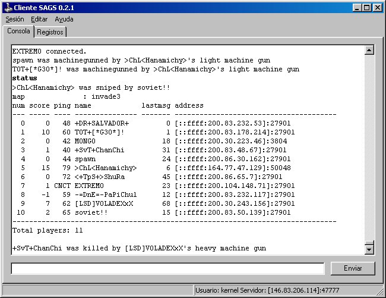

SAGS o Secure Administrator of Game
Servers es un proyecto Open Source que tiene como finalidad
producir una solución para administrar servidores de juegos bajo
GNU/Linux.
El proyecto consiste en una aplicación cliente-servidor que usa una
conexión SSL para la transferencia de información tanto del juego como
la necesaria para administrarlo.
Está disponible bajo los términos de la Licencia Pública General
de GNU.
La página del proyecto se encuentra alojada en Sourceforge.net y la
dirección es http://sags.sourceforge.net/.
Vaya a la sitio web del proyecto (indicado más arriba) y entre en la
sección "Downloads". En el
final de la página encontrará el título "Precompilated binaries" junto con
un enlace al instalador. La descarga se realiza usando el sistema
normal de descargas de Sourceforge.net
por lo que probablemente tenga que escoger un mirror antes de
comenzar a descargarlo.
El código fuente tanto del cliente como del servidor se pueden obtener directamente de la sección "Downloads" o desde la lista de archivos del proyecto en Sourceforge.net: http://sourceforge.net/project/showfiles.php?group_id=106892.
En la imagen siguiente se muestra la ventana principal con algunas
indicaciones de los distintos elementos que la conforman.
Lo primero que debe hacer es conectarse al servidor remoto usando el nombre de usuario y la contraseña asignadas a Ud. por el administrador. Para ingresar los datos vaya al menú Sesión / Conectar.... A continuación aparecerá una ventana como la siguiente.
Ingrese los datos del servidor de la forma <dirección IP>:<puerto>
y luego su nombre de usuario y la contraseña. En la versión para Linux
se pueden usar direcciones IPv6 encerradas entre corchetes de la forma [<dirección
IPv6>]:<puerto>, sólo si el sistema
operativo soporta el nuevo protocolo.
Si se está conectando a un servidor en el puerto 47777, no es necesario agregar este
valor y sólo basta con ingresar la dirección IP.
Durante la sesión la ventana principal puede parecerse a la
siguiente que muestra un servidor de Quake II con D-Day: Normandy.

Para enviar un comando al servidor del juego, sólo escríbalo en la
entrada de abajo y luego pulse el botón Enviar o simplemente presione la
tecla Enter. Los comandos ingresados son enviados al servidor y pasados
directamente al proceso del juego. En la consola queda destacado el
comando enviado al servidor (en la imagen de arriba es "status") y la salida es mostrada en
la consola unos instantes después.
Se puede cambiar la fuente de la consola escogiendo Editar / Fuente... en el menú.
Para guardar los mensajes en la consola a un archivo hay que
seleccionar Sesión / Guardar a
archivo... en el menú.
En la pestaña Registros se
pueden ver las distintas acciones que realiza el cliente y se muestran
los nombres de algunos de los paquetes enviados por el servidor.
Para desconectarse sólo basta con seleccionar Sesión / Desconectar en el menú o
simplemente cerrar la aplicación desde su ícono en la barra de título.